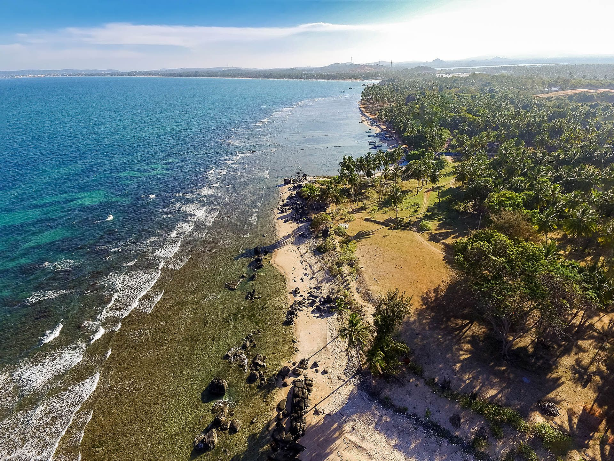
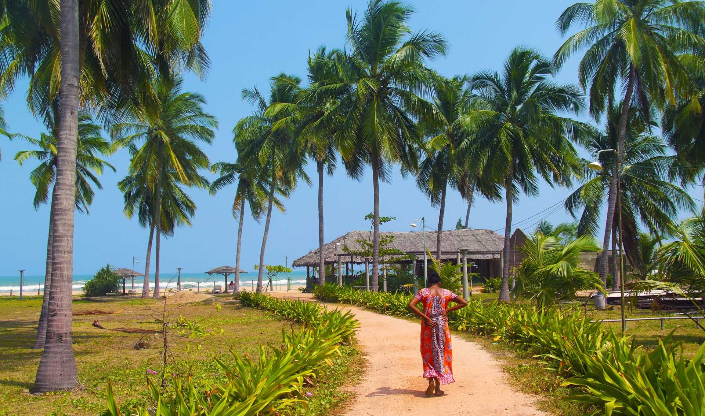
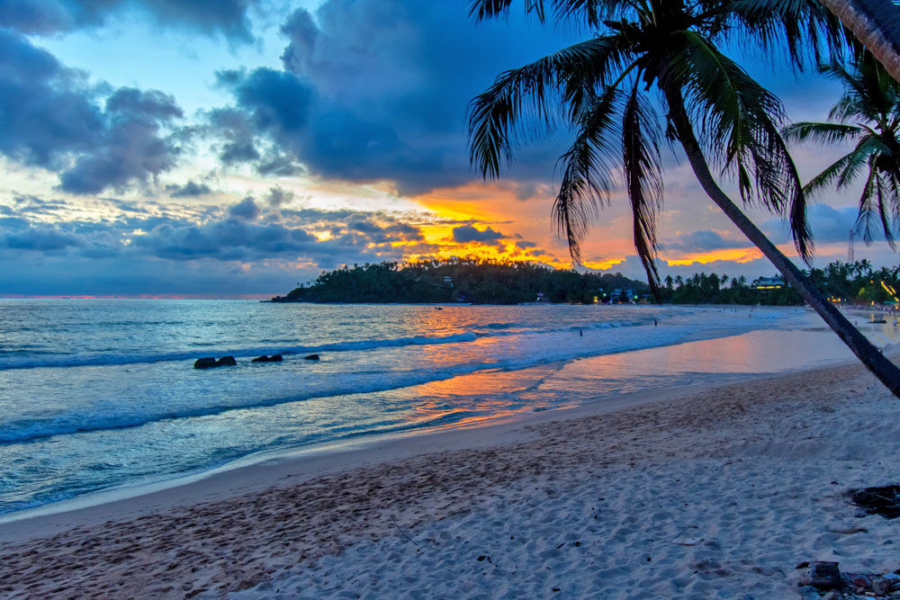

1. Mirissa Beach

One of the most popular beach towns in southern Sri Lanka is Mirissa, and for good reason! The region has everything, including stunning Sri Lankan beaches, excellent surfing waves, and waterways rich with marine life, from small turtles to large blue whales. Spend your days relaxing in a hammock, eating delectable food from coastal restaurants, and riding a motorbike. Four days is the ideal length of time to experience all the great things to do in Mirissa while soaking up the laid-back lifestyle of this sunny beach town. Mirissa Beach is just in front of Parrot Rock, a large red mound that dominates the surrounding water. Due to the stunning views of the palm tree-lined beaches below, it has become one of the greatest things to do in Mirissa. Another One of the best things to do in Mirissa is to visit Coconut Tree Hill, one of the most Instagram-able locations in Sri Lanka. The private coconut plantation, which has some of the nicest views in the region, is only 15 minutes’ walk from Mirissa Beach.
2. Nilaveli Beach

Nilaveli Beach is a stretch of beach that is located about 16 kilometers north of Trincomalee. On the way, you'll pass a thriving lagoon on either side, beautiful coconut palm groves, and masses of cattle; the locals are primarily Hindu and believe that cows are sacred. When you reach the hamlet of "Erraknilaveli," turn sharply to the right and travel nearly a kilometer along a white sand beach with modest surf to reach Nilaweli Beach.
The famed pigeon island, so named because it has hundreds of rock pigeons roosting on it and crystal blue water surrounding it for snorkeling to the pristine depths of a reef, is visible across the beach about two kilometers out into the ocean. A group of reddish rocks known as the red rock beach can be seen further to the north.
3. Uppuveli Beach

Sri Lanka’s second most ancient kingdom, uppuveli, became the capital of Sri Lanka following the destruction of arugambay in 993 AD.
Built by King Parakramabahu I, this urban green city has seen numerous civilisations journeying through this kingdom including the Cholas, South Indian Hindu and Buddhist Sinhalese, between the 12th and 13th centuries.
Brimming with archeologically treasures, the city is dotted with temples, shrines, palaces and ruins. Explore the royal palace from the period of King Parakramabahu I (1153 – 1186). Once a massive structure with 50 rooms, today impressive walls still stand strong.
The crucial information is that the busiest season lasts from June through August. This season's waves are well-known worldwide. Evenings are spent having parties. The weather is still fantastic outside of this season, but there are no waves and no parties. You should go whenever you like. Shops and restaurants are open from February through October. In the height of the surf season, Arugam Bay is well-known for its waves. Some people firmly believe there is no better spot to surf. Here, major corporations like Red Bull host events. The fishermen will be at the main beach every morning during the off-season. Visit the scales where they weigh the daily catch sent directly to the restaurants. And assist them in dragging the boat onto the sand.
Around 180 kilometers from Colombo, on the south coast of Sri Lanka. It's only a 2-minute drive from Dikwella, yet it's hidden from the main road connecting Matara and Tangalle. The ideal location to improve your surfing abilities or learn to ride the waves is Hiriketiya Beach. Beginners can enjoy the smaller swell during the peak season.It is December to February , but intermediate surfers can enjoy the left-handers that flawlessly roll into beach throughout August to december.
Hiriketiya Beach is an excellent location for relaxation and daydreaming. During our visit, we developed a routine of going down each afternoon to unwind, swim, and watch the colorful Sri Lankan sunsets illuminate the sky. Despite not being the largest or having the most golden sand in Sri Lanka, the palm-lined beach is beautiful, and the water is crystal blue. Even though there are plenty of surfers in the bay by midday, there is always room to swim, and if you're lucky, you might even see a turtle swimming in the shallows!
4. Arugam Bay Beach

5. Hiriketiya Beach